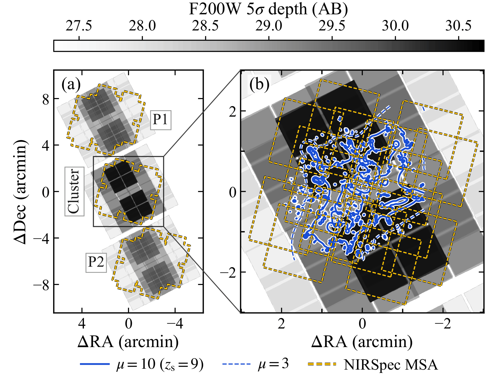
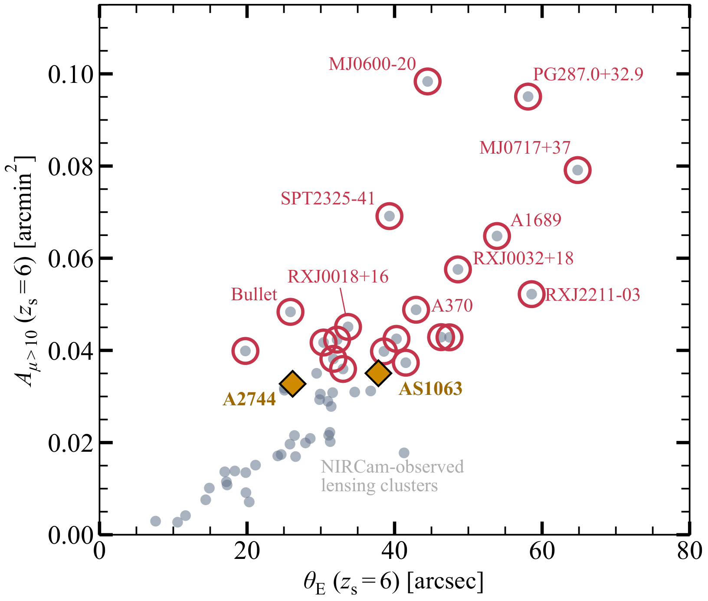

The survey design is being finalised with the community through the white paper series. The architecture below is the current reference baseline, the configuration the white papers are written against, and its main parameters remain open to community input.
The reference baseline
The baseline targets four rich lensing clusters with a common design of about 310 charged hours per cluster, roughly 1240 hours in total. Each target consists of the cluster field and two flanking fields (P1 and P2), each covered by a 2×2 NIRCam mosaic of about 25 square arcminutes. NIRSpec and NIRCam run as a coordinated pair: when the micro-shutter array observes the cluster core, NIRCam lands on a flanking field, and when it observes a flanking field, NIRCam returns to the cluster. After the first epoch, every mosaic therefore comes with deep spectroscopy at no extra cost.
Each cluster is visited in 14 epochs over 72 months, alternating between two position angles 180 degrees apart every six months. The imaging uses eight NIRCam filters (F090W to F444W) and builds up in three tiers, from a wide reference layer to an ultra-deep core. The spectroscopy accumulates about 202 hours of NIRSpec MSA science per cluster, with 72 hours on the core, 60 and 71 hours on the two flanking fields, and up to 44–55 hours per target on the deep masks.
| Tier | Schedule | Epochs | Time | MSA | Depth and area |
|---|---|---|---|---|---|
| Wide | first epoch | 1 | 15 h | – | 27.9 over all three fields (≈76 arcmin² in total), the reference footprint for the MSA masks |
| Medium | months 6–24 | 4 | 104 h | 64 h | 29.1–29.5 on the cluster (25 arcmin²); 28.7–29.05 on the flanks (18.5 arcmin² each) |
| Ultra-deep | months 24–72 | 9 | 191 h | 138 h | 30.5 on the core (9.3 arcmin²); 29.7–29.8 on the flanks |
| Per cluster | 72 months | 14 | 310 h | ≈202 h | Eight NIRCam filters, three depth tiers |


Design options
Within this architecture, several choices remain open, including the cluster sample, the balance between area and depth, and the mix of instrument modes. The white papers examine these options against their science cases, and the adopted design will follow from that community input.